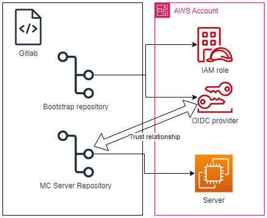

Minecraft Server on AWS using CI/CD, fully automated
Objective
What we want to achieve is a fully automated deployment of a Minecraft Server using Terraform and CI/CD automation on Gitlab on AWS.

Pre-Requisites
Personal Access Token
If we are using the free version of Gitlab we will need a Personal Access Token (it would be better to use a project TOKEN but it is not posible to create inside a Group).
This PAT will be used in the Manual deployment of the Bootstrap to access the TFstate on Gitlab
Follow the instructions as specified here and save it for later
AWS Account access
We also need the access key and secret access key for our AWS account, since we are going to deploy the bootstrap manually
Bootstrap
The first step is to bootstrap the requirements for the deployment to be automated.
For that we need first to create a trust relationship betweem the AWS Account and the Gitlab repository.
You can check the code here:
https://gitlab.com/zeneke-tech/aws-minecraft-server/bootstrap
- Create an .env file and put the following contents:
- Your gitlab user
- The PAT you created on the pre-requisites
- The access key and secret access key that you created on the pre-requisites
export USER="yourgitlabusename@gmail.com" export PASSWORD="glpat-GITLABPATTOKEN" export AWS_ACCESS_KEY_ID="AWSACCESSKEY" export AWS_SECRET_ACCESS_KEY="AWSSECRETACCESSKEY"
- Put the correct values on the configuration files for Terraform on the config/ folder
- Here the most imporant settings are:
- "address" that points where the TFstate will be saved.
- "mcserver_repository" that will create the trust relationship for the deployments
- Here the most imporant settings are:
- Execute the following commands:
source .env
terraform init --backend-config="config/backend-production.conf" -backend-config="username=$USER" -backend-config="password=$PASSWORD" - Execute the changes on terraform:
terraform plan --var-file="config/variables-production.tfvars" -out=$PLAN
terraform apply plan-cache
Minecraft Server deployment
Here everything is fully automated, you have to configure only:
- The backend-production.conf file with the correct settings that points to the repository.
- The variables-production.conf with your region and TAGs.
- You have to create 3 variables on the repository:
- ROLE_ARN: with the ARN of the role previoulsy created on bootstrap
- key: ROLE_ARN
- value: arn:aws:iam::1234567890:role/gitlab-role
- PAT_USERNAME: the username that was used on the .env file on bootstrap (your gitlab username)
- key: PAT_USERNAME
- value: gitlabusername
- PAT_PASSWORD: the PAT token created on bootstrap
- key: PAT_PASSWORD
- value: pattoken
- SSH public key: To access the MC server through SSH
- key: TF_VAR_ec2_key_pair
- value: public_key_pair
- ROLE_ARN: with the ARN of the role previoulsy created on bootstrap
- Now when you push the changes to your repository, the CI/CD should automatically deploy the EC2, and install the Minecraft Server, and execute it inside a Tmux session.
- You should be able to connect to the IP that the Job 'apply' gives you on gitlab to the standard port
Improvements
There are a lot of improvements that can be done, I will divide it in the repositories
Bootstap
- Convert the manual deployment on a CI/CD pipeline
- PROs: You dont have to execute anything manually
- CONs: You have to put AWS credentials on the gitlab variables that can create IAM roles
Mc-server
- Restrict the IP access for the SSH (now its open to everybody).
- Create a variable for the port of the Minecraft server (now runs with the standard 25565)